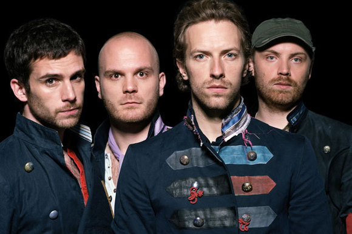

|  |
Tudo começou quando Martin e Jon se conheceram na Universidade de College London (UCL), na Inglaterra, em 1996. Após isso, os dois passaram o resto do ano de formação pensando somente em formar uma banda, que, de brincadeira, viria a se tornar a Pectoralz. Guy Berryman, colega de sala dos dois primeiros integrantes, veio a ingressar algum tempo depois.
Em 1997, quando o grupo já se renomeara "Starfish", Martin convidou seu amigo de longa data Phil Harvey, que estudava civilizações clássicas em Oxford, para ingressar à banda e se tornar empresário dela. Logo depois, a banda veio a se chamar "Coldplay", que perdura até hoje. O time viria a estar completo quando Will Champion se juntou para tocar instrumentos de percurssão, principalmente a bateria, embora tenha aprendido desde criança a tocar piano, guitarra, baixo, e até uma espécie de flauta irlandesa chamada 'tin whistle'.
Em 1998 a banda lançou sua primeira gravação, um EP (Pequena gravação que não pode ser considerada álbum), chamado "Safety", cuja maioria das 500 cópias foi distribuída para amigos e parentes da banda, sobrando somente 50 para comercialização. Em dezembro deste mesmo ano a banda assinou com a gravadora independente Fierce Panda, que lhe renderia, em 1999, outro EP chamado "Brothers & Sisters", gravado praticamente em 4 dias e com 2500 cópias, além de ótimas críticas da revista New Musical Express, que os titularia como uma das melhores bandas de 1999.
Logo após o lançamento de "Brothers & Sisters", a banda assinou com outra gravadora, a Parlophone, um contrato constando a gravação de 5 novos álbuns somente para a primavera de 1999. Após se apresentarem em Glastonbury, cidade inglesa, o grupo foi ao estúdio para gravar seu terceiro EP, chamado "The Blue Room". O disco foi lançado em Outubro e tinha 5000 cópias disponíveis ao público. Um de seus singles, "Bigger Stronger", chegou a ser tocado ao vivo na rádio BBC1. As gravações de The Blue Room, entretanto, eram bastante tumultuadas. Champion foi inclusive temporariamente afastado, mas Chris, o mesmo que o afastara, pediu-o para que voltasse. Por sua culpa em ter expulso o amigo, Chris, não-fumante nem bebente assumido, foi a um bar para se esbaldar. Tempo depois o grupo trabalhou as diferenças entre si e combinou algumas regras para que o problema anteriormente ocorrido não se repetisse. Primeiro, combinaram uma espécie de "democracia" entre eles: todos os lucros seriam divididos igualitariamente entre os membros, a exemplo de U2 e R.E.M. Depois, que a banda demitiria qualquer integrante que fosse flagrado utilizando cocaína. Anos depois, Martin viria até a fazer piada sobre a boa imagem da banda, satirizando-a.
Em novembro de 1999 o grupo há havia começado a trabalhar arduamente em seu álbum de estréia, Parachutes, gravando no Rockfield Studios com o produtor Ken Nelson. Entre contratempos com shows e viagens a obra só veio se concretizar em Maio do ano seguinte. Depois de três EP's fracassados, figuraram pela primeira vez no TOP40 inglês, com o single "Shiver".
Junho de 2000 foi um momento chave para a banda: deram início a sua primeira turnê, passando inclusive pelo Festival de Glastonbury. Também lançaram o single "Yellow", que alcançou a quarta posição do UK Singles Chart e propiciou o reconhecimento público da mesma. Parachutes foi indicado para o Mercury Music Prize em Setembro de 2000. O sucesso foi tão grande que a expectativa de venda era de 40 mil cópias, entretanto, no Natal, os números chegaram à casa do 1.6 milhão. Depois de obter sucesso na Europa, o grupo resolveu voar mais alto: queria a América do Norte, lançando seu álbum "Parachutes" em terras ianques em novembro de 2000. Recebendo ótimos comentários da crítica norte-americana, o álbum, além de receber duplo disco de platina, recebeu também o prêmio de "Melhor álbum de música alternativa" no Grammy Awards de 2002.
A banda voltou ao estúdio Parlophone em outubro de 2001, para começar a trabalhar em seu segundo álbum, "A Rush of Blood to the Head", produzido novamente por Ken Nelson, e que foi lançado em agosto de 2002. Seu repertório incluía grandes sucessos como Clocks e The Scientist.
Em dezembro de 2003 os leitores da revista "Rolling Stone" escolheram Coldplay como a melhor banda do ano. Mais uma vez, em 2004, a banda venceu o prêmio Gremmy Awards de "Melhor álbum de música alternativa" e também na categoria "Gravação do Ano" com a música "Clocks".
O terceiro álbum "X&Y", gravado novamente na Parlophone, não teve tanta repercussão igual aos anteriores, mas mesmo assim não deixou de ter seus méritos. Alcançou em 2005, ano em que foi lançado, a casa das 8,3 milhões de cópias. Entre outras músicas lançadas no mesmo ano, duas eram de destaque: "Fix You" e "Talk". Somente como curiosidade, o álbum, lançado com um ano e meio de atraso, chegou a desvalorizar as ações da EMI tamanha a influência da banda na época.
Em Outubro de 2006 a banda já começava a planejar seu quarto álbum de estúdio, "Viva la Vida or Death and All His Friends", produzido por Brian Eno. Durante o período em que gravavam, o grupo deu uma pausa para fazer turnês mundo afora, principalmente na América Latina, aonde se apresentou para Chile, Argentina, Brasil e México. Visitaram também algumas igrejas góticas de Barcelona para gravar vocais. Foi num destes passeios, mais precisamente no México, que Chris Martin viu um quadro da artista mexicana Frida Kahlo cujo nome fora inspiração integral para o nome do álbum. O primeiro single lançado, "Violet Hill", foi disponibilizado por uma semana para download no site oficial da banda, ultrapassando 600 mil downloads.
O álbum "Viva La Vida or Death and All His Friends" foi lançado em Junho de 2008 e gravado na Parlophone. Nos Estados Unidos, no primeiro dia foram vendidas 316 mil cópias, e na primeira semana, 720 mil. No dia 7 de maio, diga-se de passagem, o grupo lançou uma versão em vinil limitada em conjunto com a revista inglesa NME, incluindo seu single de sucesso "Violet Hill" e um lado B exclusivo, chamado "A Spell a Rebel Yell". Em Novembro do mesmo ano foi lançado um EP chamado "Prospekt's March". Em dezembro de 2008, Joe Satriani iniciou um processo contra a banda alegando "porções substanciais" da música de Satriani entitulada "If I Could Fly" de seu álbum de 2004. O Coldplay negou a acusação e posteriormente conseguiu atingir um acordo por ambas as partes.
Em 8 de fevereiro de 2009 o álbum Viva La Vida recebeu sete indicações para o Grammy Awards, vencendo nas categorias "Música do Ano" com "Viva la Vida", "Melhor álbum de Rock" por "Viva la Vida or Death and All His Friends", e "Melhor vocal performance por dueto por grupo" por "Viva la Vida".
No dia 15 de maio de 2009 a banda disponibilizou para download gratuito em seu site o álbum oficial "LeftRightLeftRightLeft".
Mais recentemente foi disponibilizado o single "Strawberry Swing" para o público.